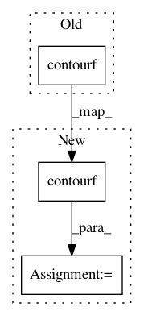

5495609820917895f18b525184d00eb71b362e9d,mlxtend/plotting/decision_regions.py,,plot_decision_regions,#Any#Any#Any#Any#Any#Any#Any#Any#Any#Any#Any#Any#Any#Any#Any#Any#,42
Before Change
default_kwargs=contourf_kwargs_default,
user_kwargs=contourf_kwargs,
protected_keys=["colors", "levels"])
ax.contourf(xx, yy, Z,
colors=colors,
levels=np.arange(Z.max() + 2) - 0.5,
**contourf_kwargs)
ax.axis(xmin=xx.min(), xmax=xx.max(), y_min=yy.min(), y_max=yy.max())
// Scatter training data samples
After Change
default_kwargs=contourf_kwargs_default,
user_kwargs=contourf_kwargs,
protected_keys=["colors", "levels"])
cset = ax.contourf(xx, yy, Z,
colors=colors,
levels=np.arange(Z.max() + 2) - 0.5,
**contourf_kwargs)
ax.contour(xx, yy, Z, cset.levels, colors="k")
ax.axis(xmin=xx.min(), xmax=xx.max(), y_min=yy.min(), y_max=yy.max())
In pattern: SUPERPATTERN
Frequency: 3
Non-data size: 3
Instances
Project Name: rasbt/mlxtend
Commit Name: 5495609820917895f18b525184d00eb71b362e9d
Time: 2018-03-15
Author: mail@sebastianraschka.com
File Name: mlxtend/plotting/decision_regions.py
Class Name:
Method Name: plot_decision_regions
Project Name: astroML/astroML
Commit Name: 582670eb0b8b0bcd44b5574733b141757452e1fa
Time: 2014-01-30
Author: vanderplas@astro.washington.edu
File Name: astroML/plotting/scatter_contour.py
Class Name:
Method Name: scatter_contour
Project Name: matplotlib/matplotlib
Commit Name: 73e2c0ff996668951aa5b5035f43452b341b3712
Time: 2017-06-09
Author: dstansby@gmail.com
File Name: lib/matplotlib/tests/test_contour.py
Class Name:
Method Name: test_given_colors_levels_and_extends